This section documents the dataset creation pipeline end-to-end: API collection, raw-to-clean
transformations,
and exploratory visualizations used to understand the data and validate data quality.
Data Sources and Links (repeatability)
The project is designed to be reproducible: the API endpoints, raw data, cleaned data, and Python
scripts are all linked
so another person can regenerate the dataset and plots.
The API key is not shown publicly. The raw JSON responses were flattened into CSV files for transparency
and repeatability.
RAW vs CLEAN Data (screenshots)
The figures below show small snapshots of the dataset at different stages. These are screenshots only
(not full datasets).
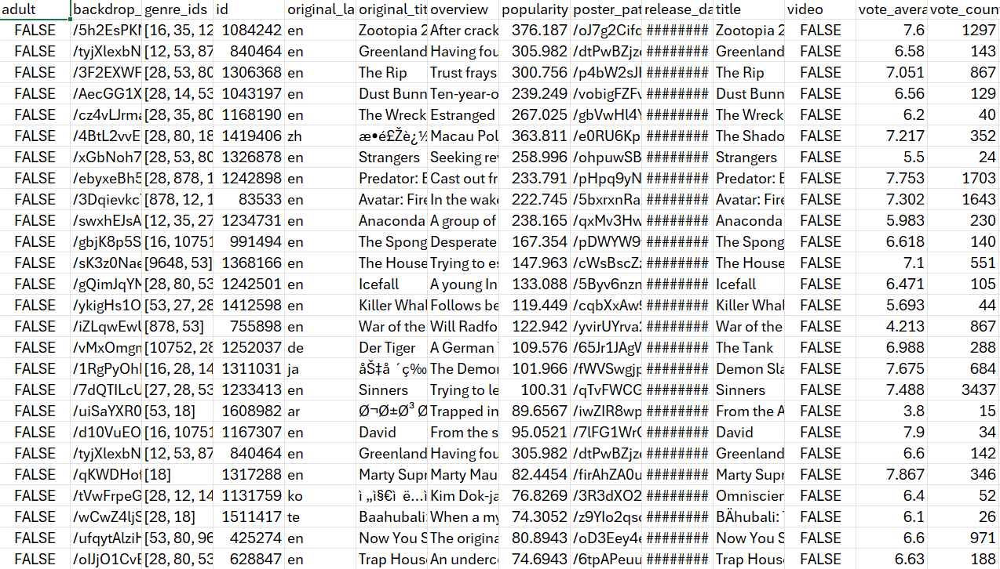
RAW Stage 1 — Popular List (tmdb_popular_raw.csv).
This dataset comes directly from the “popular” endpoint. It includes basic identifiers and
engagement fields
such as popularity, vote count, and average rating.
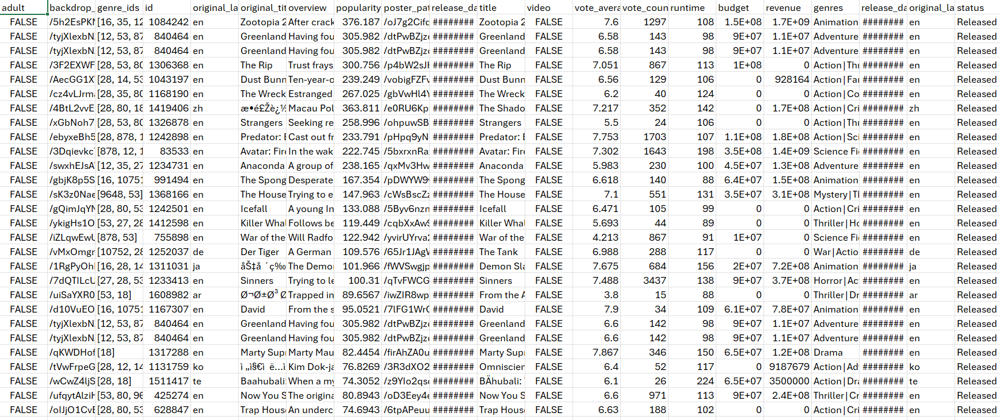
RAW Stage 2 — Enriched Dataset (tmdb_enriched_raw.csv).
Each movie from Stage 1 was enriched using its movie_id to add features required for
later modeling,
such as runtime, budget, revenue, and genre information.
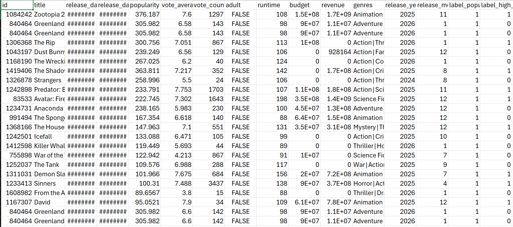
CLEAN Stage — Modeling Dataset (tmdb_clean.csv).
The cleaned dataset standardizes datatypes, removes missing values, and adds labels to support
supervised learning later.
Cleaning + Preparation (what was done and why)
The raw API data is not immediately usable for analysis because it contains mixed datatypes (numbers
stored as strings),
inconsistent missing values, and extreme outliers (especially for budget and revenue). Cleaning was
performed in Python to
produce a single modeling-ready table with consistent datatypes and no missing values.
Key cleaning actions
Type normalization: converted numeric columns such as
popularity, vote_average, vote_count, runtime,
budget, and
revenue into true numeric types so plots and models work correctly.
Missing value handling: filled missing numeric values using the median to remove NaNs while
keeping all rows.
This avoids dropping movies and keeps the dataset consistent for later models.
Category cleanup: standardized text fields such as title/genres and filled missing categories
with a placeholder.
Outlier stability: capped extreme budget and revenue values at the 99th percentile.
This keeps a few blockbuster-level movies from dominating early EDA and makes later modeling more
stable.
Labels created for later supervised learning
label_popular_top25: 1 if a movie’s popularity is in the top 25% of the dataset, else
0.
This creates a clear “high popularity” success label.
label_high_rating: 1 if vote_average ≥ 7.0, else 0.
This creates a separate success label based on audience approval.
These labels make the dataset usable for later classification models (Decision Trees, Naive Bayes, SVMs,
Regression/Ensembles),
while the numeric features support PCA, clustering, and other unsupervised methods.
Exploratory Visualizations (10 required)
These visualizations serve two purposes: (1) understand distributions and relationships in the dataset,
and (2) validate that
cleaning decisions (missing value handling, outlier caps, datatypes) produced sensible results.
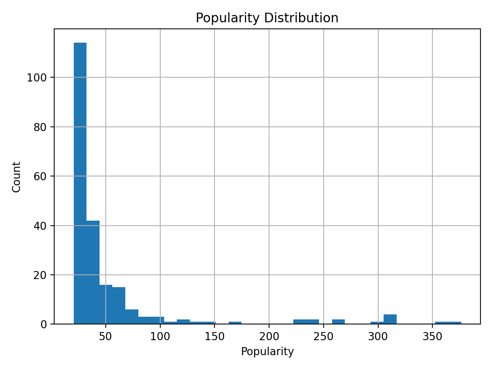
Figure 1 — Popularity Distribution. Popularity is right-skewed: most movies have moderate
popularity and a smaller
set of movies have very high popularity. This supports creating a “top popularity” label.
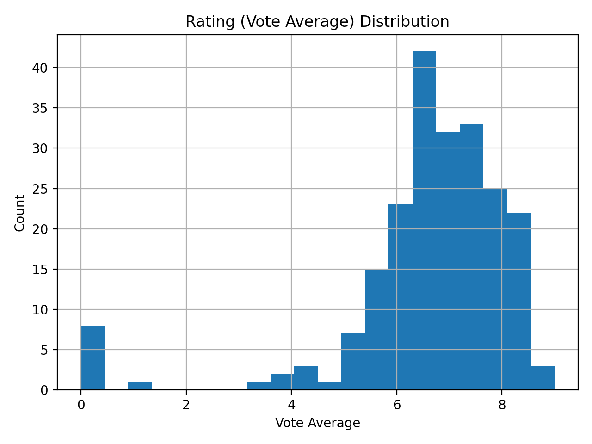
Figure 2 — Rating Distribution. Ratings are concentrated around mid-to-high values. This
motivates a threshold label
(e.g., ≥ 7.0) to separate strong audience approval from average reception.
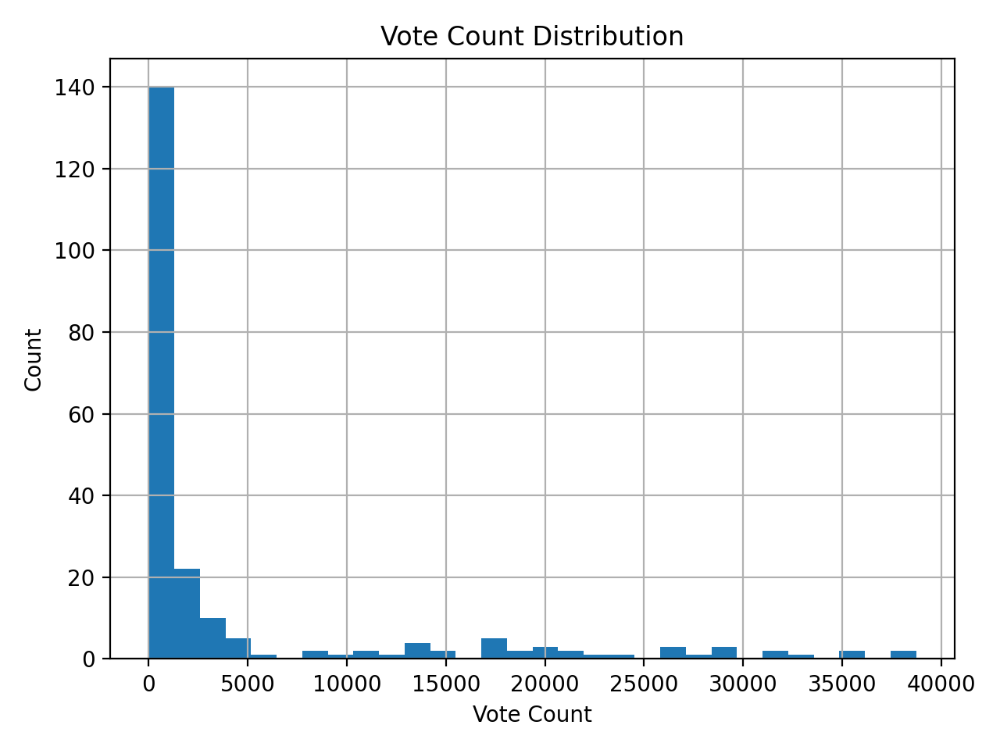
Figure 3 — Vote Count Distribution. Vote counts vary widely. Models may treat vote count as a
confidence proxy
(ratings with many votes are typically more stable than ratings with few votes).
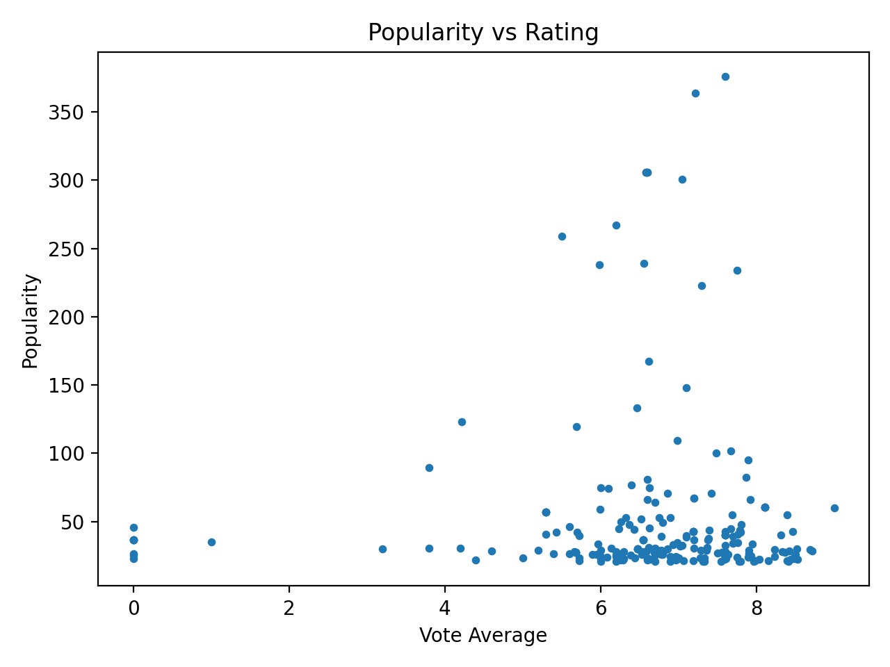
Figure 4 — Popularity vs Rating. Popularity and ratings are not identical signals of success;
some movies are popular
without being highly rated and vice versa. This supports using multiple definitions of “success.”
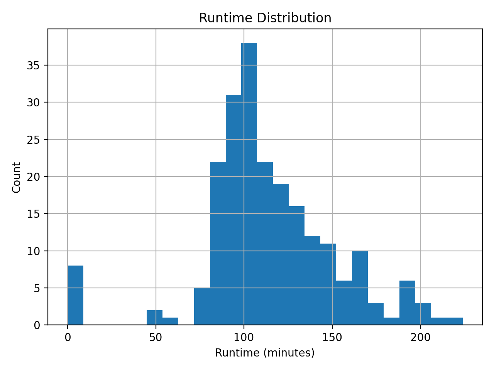
Figure 5 — Runtime Distribution. Runtime clusters around typical feature length. Runtime is a
useful numeric feature for
PCA/clustering and may interact with genre preferences.
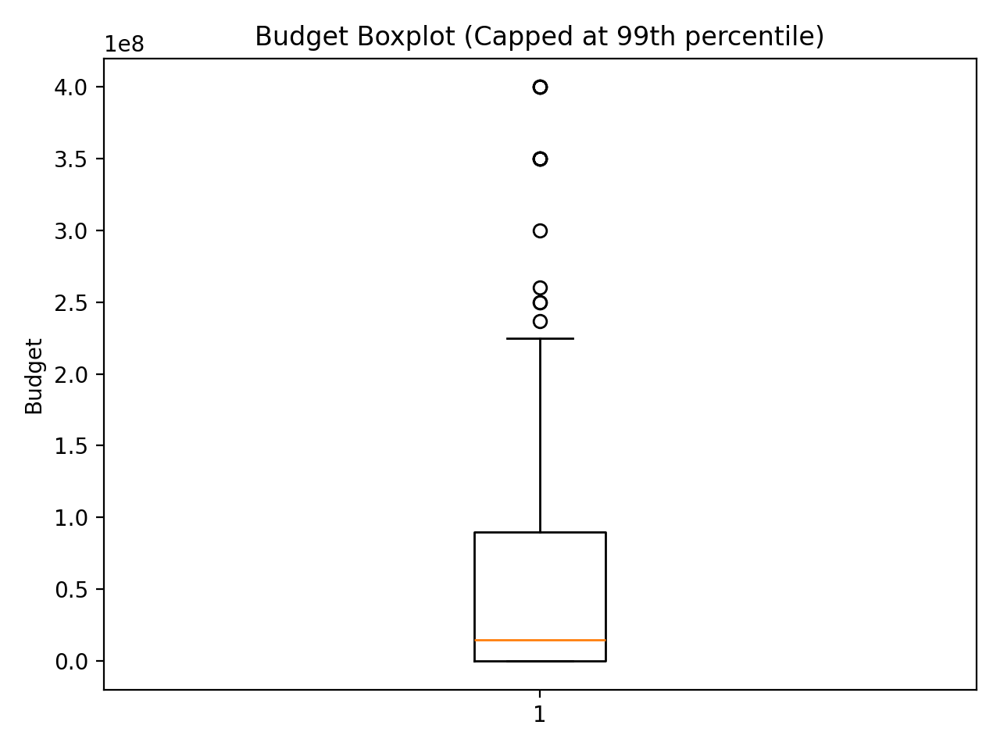
Figure 6 — Budget (Boxplot). Budget contains extreme outliers. Capping at the 99th percentile
reduces the influence of
very large values and makes visual summaries more representative.
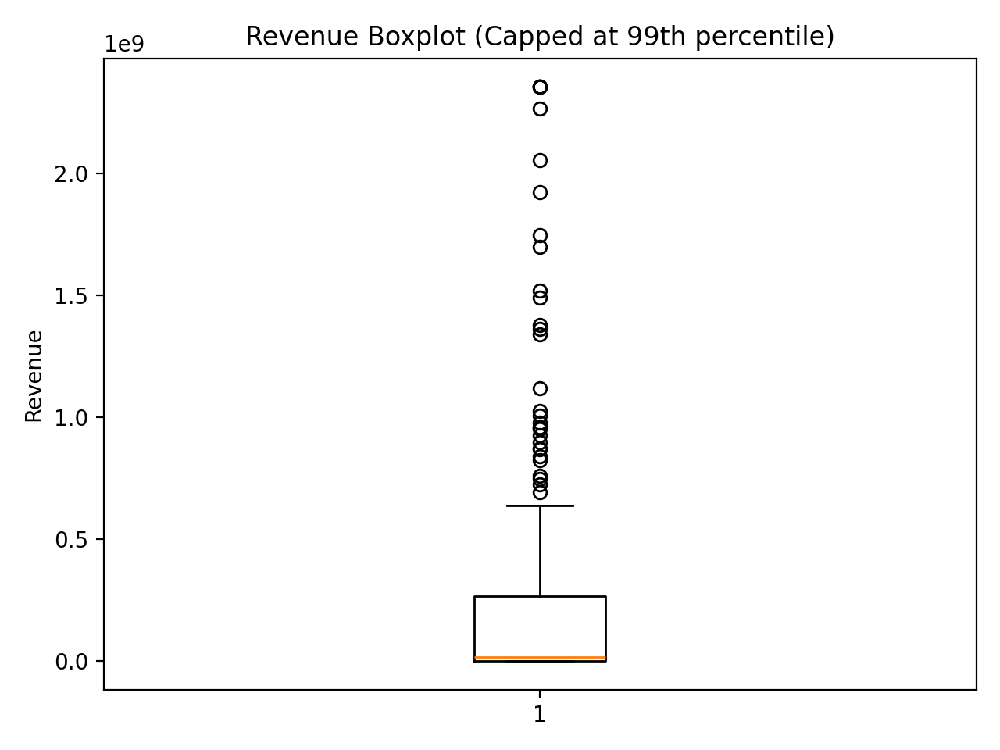
Figure 7 — Revenue (Boxplot). Revenue is strongly skewed. This indicates future steps may
benefit from robust scaling
or transformations when building models.
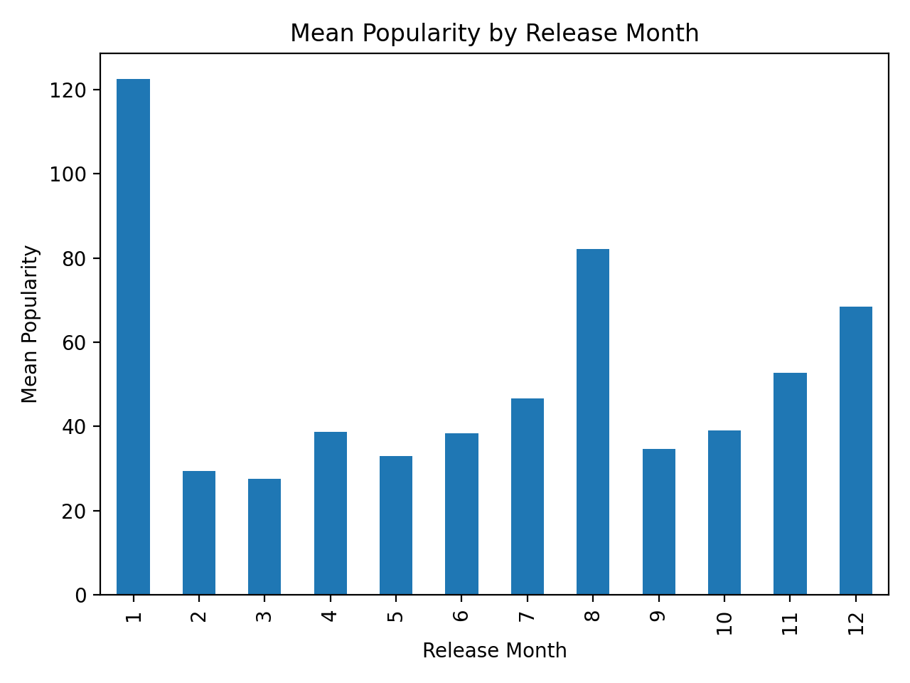
Figure 8 — Popularity by Release Month. Popularity differs across months, suggesting that
release timing may correlate
with audience attention (seasonality), which can be tested later.
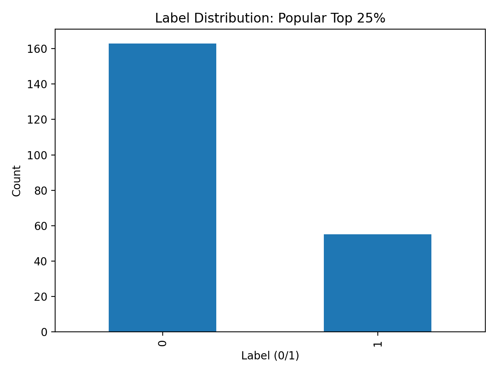
Figure 9 — Popularity Label (Top 25%). This shows how many movies fall into the
top-popularity class. A reasonably
balanced label helps later supervised models learn meaningful patterns.
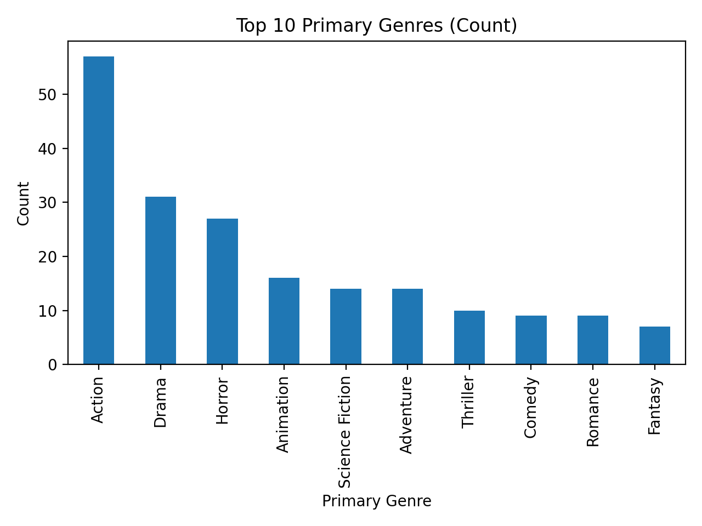
Figure 10 — Most Common Genres. Genre frequency provides context for the dataset composition
and motivates later work
with one-hot encoding, association rules, and clustering by genre mixtures.
How this helps the next modules
PCA: numeric features (popularity, votes, runtime, budget, revenue) can be scaled and reduced
to study which factors
explain most variance.
Clustering: cleaned numeric columns + genre encodings can group movies into “types” (e.g.,
high-budget/high-revenue vs
low-budget niche films).
ARM: genres and (later) keywords can be treated as items to discover common genre
combinations and their association
with success labels.
Supervised models: the labels created here (label_popular_top25,
label_high_rating) enable
classification experiments using DT/NB/SVM/Regression to predict success from features.